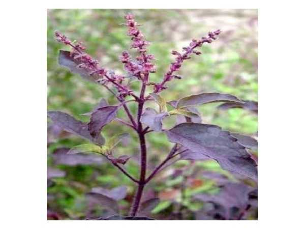

Ocimum tenuiflorum
Common Names: Holy Basil, Tulsi, Krishna Tulsi, Black Basil
Local Name: Karu Tulsi / Thulasi (Tamil), Krishna Tulsi (Hindi)
Family: Lamiaceae
Origin: Indian subcontinent; sacred throughout South and Southeast Asia
Plant Type: Perennial aromatic shrub
Average Lifespan: Perennial; 3–5 years
| Growth Habit | Erect, branching aromatic shrub; purple-tinged stems and leaves |
| Plant Size | 30–60 cm tall |
| Leaves | Ovate, dark green to purple-black; strongly aromatic; clove-like scent |
| Flowers | Small, purple; in terminal racemes; sacred in Hindu worship |
| Root System | Fibrous, shallow root system |
| Climate | Tropical to subtropical; warm and sunny |
| Temperature Range | 20–35°C; frost-sensitive |
| Soil Type | Well-drained, fertile loamy soil |
| Soil pH Preference | 6.0–7.5 |
| Sun Requirement | Full sun |
| Water Requirement | Moderate; allow soil to dry slightly between watering |
| Can it Grow in Pots? | Yes; traditionally grown in pots near home entrance |
| Fertilizer Schedule | Monthly with compost; minimal fertilizer needed |
| Common Pests | Aphids, whiteflies; generally pest-resistant due to aromatic oils |
| Propagation by Seeds | Seeds germinate readily in 5–10 days; self-seeds freely |
| Propagation by Cuttings | Stem cuttings root easily in water or moist soil |
| Immune Support | Adaptogenic herb; used for stress, immunity, and respiratory conditions; key herb in Ayurveda |
| Anti-inflammatory Properties | Contains eugenol and ursolic acid; anti-inflammatory, antibacterial, antiviral |
| Digestive Health | Used for digestive issues, fever, and as a general tonic in Siddha and Ayurveda |
Disclaimer: Information provided is for educational purposes only and not a substitute for medical advice.
Add your field observations here.